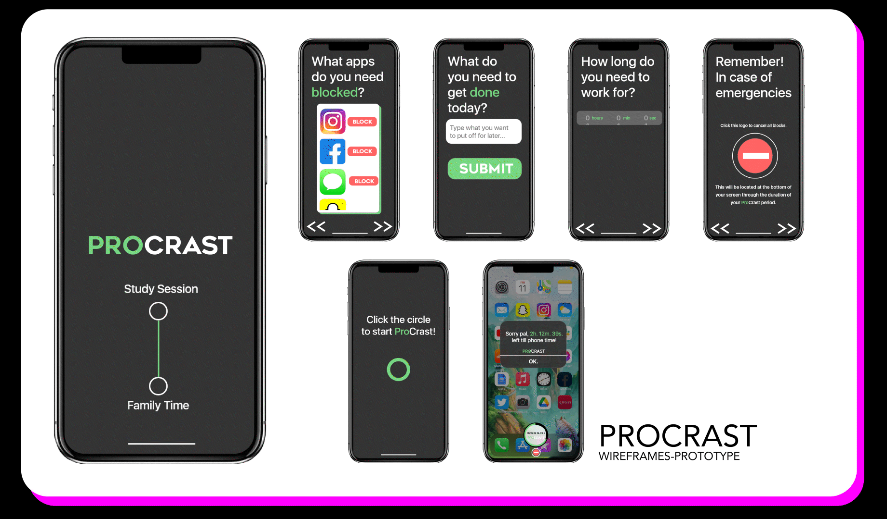

During the BFA Design program at Mason Gross School of the Arts, I was tasked to create sketches, create wireframes, and build a prototype app. I designed an app meant to help with procrastination known as "ProCrast"
Working Prototype can be viewed
here!
